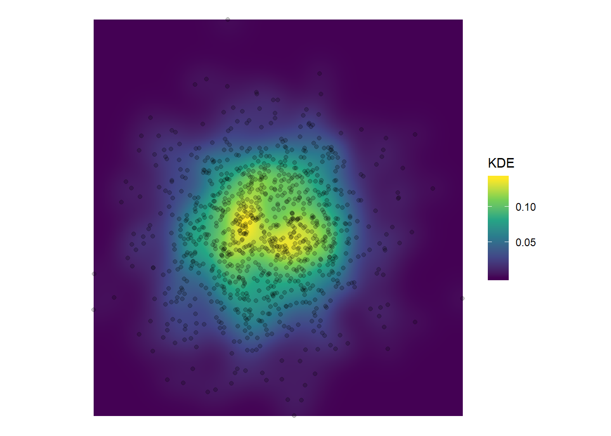

4 Geoprocessing Tools
4.1 Spatial Analyst Toolbox
4.1.1 Conditional Toolset
4.1.2 Density Toolset
4.1.2.1 Kernel Denisity
There are several Function that can be tweaked to calculate KDE for sf-Point object:
tmaptools::smooth_map(): Depricatedspatstat::density.ppp(): Takes only objects of ClasspppMASS::kde2d(): Takes x/y coordinates as vectors and returns a matrix
In this example, I take MASS:kde2d() and tweak it to take sf and return raster. First, let’s create some sample data:
set.seed(10)
mypoints <- data.frame(x = rnorm(1000),y = rnorm(1000)) %>%
st_as_sf(coords = c(1,2))
plot(mypoints)my_kde <- function(points,cellsize, bandwith, extent = NULL){
require(MASS)
require(raster)
require(sf)
require(stars)
if(is.null(extent)){
extent_vec <- st_bbox(points)[c(1,3,2,4)]
} else{
extent_vec <- st_bbox(extent)[c(1,3,2,4)]
}
n_y <- ceiling((extent_vec[4]-extent_vec[3])/cellsize)
n_x <- ceiling((extent_vec[2]-extent_vec[1])/cellsize)
extent_vec[2] <- extent_vec[1]+(n_x*cellsize)-cellsize
extent_vec[4] <- extent_vec[3]+(n_y*cellsize)-cellsize
coords <- st_coordinates(points)
matrix <- kde2d(coords[,1],coords[,2],h = bandwith,n = c(n_x,n_y),lims = extent_vec)
raster(matrix)
}## Loading required package: MASS##
## Attaching package: 'MASS'## The following object is masked from 'package:dplyr':
##
## select## Loading required package: raster## Warning: package 'raster' was built under R version 3.6.1## Loading required package: sp##
## Attaching package: 'raster'## The following objects are masked from 'package:MASS':
##
## area, select## The following object is masked from 'package:dplyr':
##
## select## The following object is masked from 'package:tidyr':
##
## extract## Loading required package: stars## Warning: package 'stars' was built under R version 3.6.1## Loading required package: abindlibrary(stars)
ggplot() +
geom_stars(data = st_as_stars(mypoints_kde)) +
geom_sf(data = mypoints, alpha = 0.2, fill = "black") +
scale_fill_viridis_c() +
labs(fill = "KDE") +
theme_void()
4.1.2.2 Line Density
4.1.2.3 Point Density
4.1.3 Distance Toolset
4.1.4 Extraction Toolset
4.1.5 Generalization Toolset
4.1.6 Interpolation Toolset
4.1.7 Map Algebra Toolset
4.1.8 Math Toolset
4.1.9 Neighborhood Toolset
4.1.10 Overlay Toolset
4.1.11 Reclass Toolset
4.1.12 Surface Toolset
4.1.13 Zonal Toolset
4.2 Spatial Statistics Toolbox
4.2.1 Analyzing Patterns Toolset
4.2.2 Morans I
morans_i <- function(sf_object,col) {
require(sf)
n <- nrow(sf_object)
y <- unlist(st_set_geometry(sf_object,NULL)[,col],use.names = FALSE)
ybar <- mean(y, na.rm = TRUE)
dy <- y - ybar
dy_sum <- sum(dy^2, na.rm = TRUE)
vr <- n/dy_sum
w <- st_touches(sf_object,sparse = FALSE)
pm <- tcrossprod(dy)
pmw <- pm * w
spmw <- sum(pmw, na.rm = TRUE)
smw <- sum(w, na.rm = TRUE)
sw <- spmw / smw
MI <- vr * sw
MI
}4.3 Analysis Toolbox
4.3.1 Extract Toolset
4.3.1.1 Clip
4.3.1.2 Select
4.3.1.3 Split
4.3.1.4 Aplit by Attributes
4.3.1.5 Table Select
4.3.2 Overlay Toolset
4.3.2.1 Erase
4.3.2.2 Union
4.3.2.3 Symmetrical Difference
4.3.2.4 Spatial Join
4.3.2.5 Intersect
4.3.2.6 Identity
4.3.2.7 Update
4.3.3 Proximity Toolset
4.4 Geocoding Toolbox
4.5 Image Analysis Toolbox
4.5.1 Map Algebra Toolset
4.5.1.1 Raster Calulator
4.6 3D Analyst Toolbox
4.6.1 Raster Interpolation Toolset
4.6.1.1 IDW
my_idw <- function(groundtruth,column,cellsize, nmax = Inf, maxdist = Inf, idp = 2, extent = NULL){
require(gstat)
require(sf)
require(raster)
if(is.null(extent)){
extent <- groundtruth
}
samples <- st_make_grid(extent,cellsize,what = "centers") %>% st_as_sf()
my_formula <- formula(paste(column,"~1"))
idw_sf <- gstat::idw(formula = my_formula,groundtruth,newdata = samples,nmin = 1, maxdist = maxdist, idp = idp)
idw_matrix <- cbind(st_coordinates(idw_sf),idw_sf$var1.pred)
ras <- raster::rasterFromXYZ(idw_matrix)
if(all(grepl("polygon",st_geometry_type(extent),ignore.case = TRUE))){
ras <- raster::mask(ras,st_as_sf(st_zm(extent)))
}
ras
}4.6.1.2 Kriging
my_krige <- function(groundtruth,column,cellsize, nmax = Inf, maxdist = Inf, idp = 2, extent = NULL){
require(gstat)
require(sf)
require(raster)
if(is.null(extent)){
extent <- groundtruth
}
samples <- st_make_grid(extent,cellsize,what = "centers") %>% st_as_sf()
my_formula <- formula(paste(column,"~1"))
idw_sf <- gstat::krige(formula = my_formula,groundtruth,newdata = samples,nmin = 1, maxdist = maxdist, idp = idp)
idw_matrix <- cbind(st_coordinates(idw_sf),idw_sf$var1.pred)
ras <- raster::rasterFromXYZ(idw_matrix)
if(all(grepl("polygon",st_geometry_type(extent),ignore.case = TRUE))){
ras <- raster::mask(ras,st_as_sf(st_zm(extent)))
}
ras
}4.6.1.3 Natural Neighbor
Nearest Neighbor:
nc <- st_read(system.file("shape/nc.shp", package="sf"), quiet = TRUE)
nc_union <- st_union(nc)
points <- nc_union %>%
st_sample(1000) %>%
st_sf() %>%
mutate(val = rnorm(1000))## although coordinates are longitude/latitude, st_intersects assumes that they are planar
## although coordinates are longitude/latitude, st_intersects assumes that they are planar
## although coordinates are longitude/latitude, st_intersects assumes that they are planar
## although coordinates are longitude/latitude, st_intersects assumes that they are planar
## although coordinates are longitude/latitude, st_intersects assumes that they are planar
## although coordinates are longitude/latitude, st_intersects assumes that they are planar
## although coordinates are longitude/latitude, st_intersects assumes that they are planar
## although coordinates are longitude/latitude, st_intersects assumes that they are planar## Warning in st_voronoi.sfc(st_union(points)): st_voronoi does not correctly
## triangulate longitude/latitude data## although coordinates are longitude/latitude, st_intersection assumes that they are planarggplot() +
geom_sf(data = nc) +
geom_sf(data = thiessen, fill = NA) +
geom_sf(data = points, aes(colour = val)) +
theme_void()
## although coordinates are longitude/latitude, st_intersects assumes that they are planar